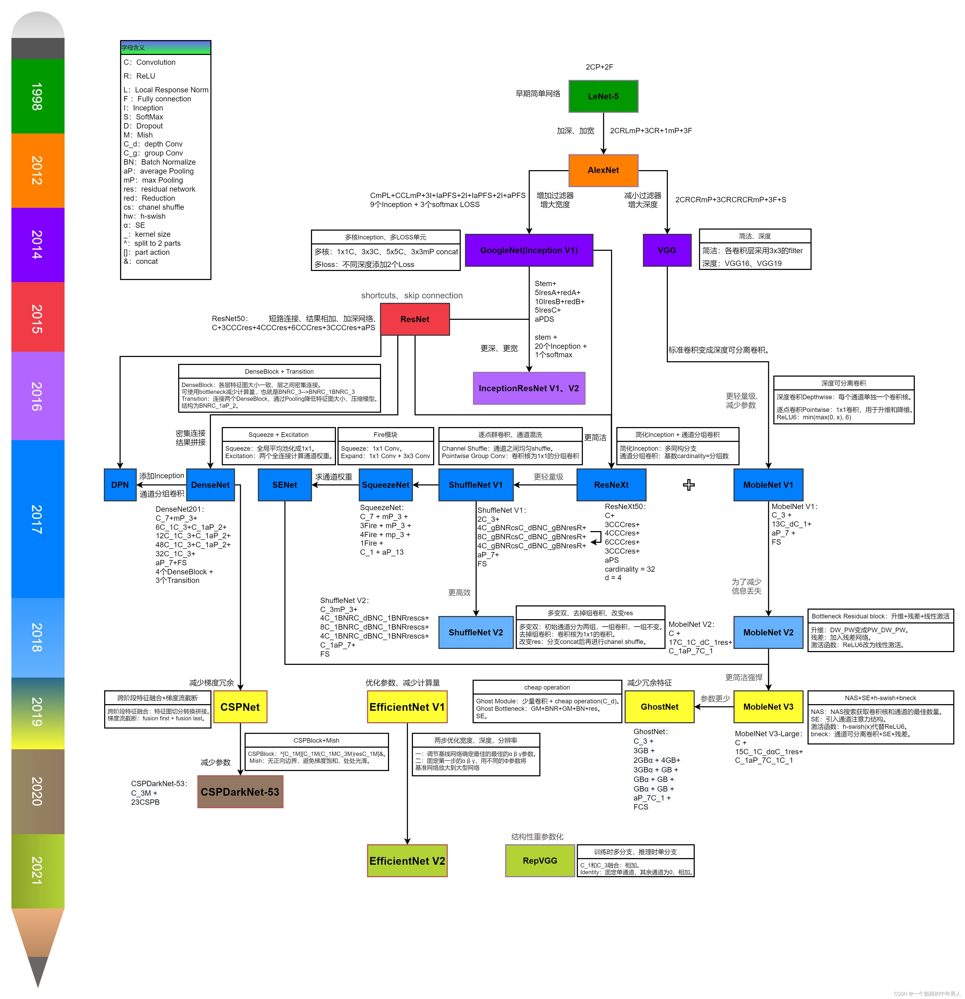
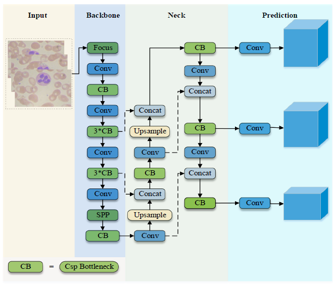

第一课：水论文的艺术
1.CNN经典模型发展历史
参考文献:
[1].CNN经典模型发展进程.
学习率
神经网络的训练参数设置主要包括学习率的设置和批数量的设置，其中学习率是梯度下降算法进行权重更新的步长，较大的学习速率允许模型更快地学习，但最终只能学习到次优的权重集，较小的学习速率可以允许模型学习到更优化或者是甚至全局最佳的权重集，但是可能花费更长的时间来训练，因此学习率的设定非常重要；而批数量指的是一次输入到网络的图像的训练样本数量，批数量过大会导致处理器负荷过重计算速度减慢，批数量过小会使得训练过程中
产生震荡，收敛效果不佳。
评价指标
mAP
一文搞懂 IOU、GIOU、DIOU、CIOU 损失函数的区别
1 | def evaluation(val_dataloader, cfg, model, device, conf_thres = 0.01, nms_thresh = 0.4, iou_thres = 0.5): |
1 | metrics_output = ap_per_class(true_positives, pred_scores, pred_labels, labels) |
1 | def non_max_suppression(prediction, conf_thres=0.3, iou_thres=0.45, classes=None): |
检测速率
深度可分离卷积
Anchor-free
参考
改进Yolo-Fast用于血细胞检测分类

model，打印模型结构
值得注意的是用这些方法打印出来的模型结构是不会显示concat，上采样这类层的！！！
这是一个很好的观察！在使用print(model)或类似的方法查看YOLOv5模型结构时，确实不会直接显示出concat（拼接）和下采样这样的层。这是因为在YOLOv5的模型定义中，这些操作是在前向传播（forward pass）函数中通过PyTorch的函数调用实现的，而不是作为独立的层定义的。
让我们详细解释一下：
层的定义方式：
- 传统层：如卷积层（nn.Conv2d）、批归一化层（nn.BatchNorm2d）等，这些是通过PyTorch的
nn模块直接定义的，会在模型打印中明确显示。 - 函数式操作：如拼接（torch.cat）、下采样（F.interpolate或nn.functional中的函数）等，这些是通过PyTorch的函数式API在代码中直接调用的，不作为模型的一部分定义。
- 传统层：如卷积层（nn.Conv2d）、批归一化层（nn.BatchNorm2d）等，这些是通过PyTorch的
YOLOv5中的实现：
拼接（Concat）：在YOLOv5中，拼接操作通常用于特征金字塔网络（FPN）或路径聚合网络（PAN）中，将不同尺度的特征图在通道维度上拼接。这是通过
torch.cat([x1, x2], 1)这样的代码实现的，其中[x1, x2]是要拼接的特征图列表，1表示在通道维度上拼接。下采样（Downsampling）：YOLOv5使用最大池化或步长为2的卷积来实现下采样，以减小特征图的空间尺寸。最大池化是通过
nn.MaxPool2d定义的（会显示），而步长为2的卷积也是通过nn.Conv2d定义的（同样会显示）。上采样（Upsampling）：用于FPN中，通过
F.interpolate或nn.Upsample函数实现，这些是在forward函数中调用的，不会在模型结构中显示。
示例代码：
以下是YOLOv5中可能的代码片段：1
2
3
4
5
6
7
8
9
10
11
12
13
14
15
16
17class YOLOLayer(nn.Module):
def __init__(self):
super().__init__()
self.conv1 = nn.Conv2d(64, 128, 3, 1, 1)
self.conv2 = nn.Conv2d(128, 256, 3, 2, 1) # 下采样
def forward(self, x1, x2):
x1 = self.conv1(x1)
x2 = self.conv2(x2) # 使用步长为2的卷积进行下采样
# 拼接操作，不会在print(model)中显示
x = torch.cat([x1, x2], dim=1)
# 上采样操作，同样不会显示
x = F.interpolate(x, scale_factor=2, mode='nearest')
return x当您打印这个模型时，您会看到
conv1和conv2层，但不会直接看到torch.cat和F.interpolate操作。为什么这样设计：
- 灵活性：使用函数式操作可以更灵活地控制数据流，例如动态选择要拼接的特征图。
- 简洁性：某些操作（如拼接）非常简单，不需要学习参数，将其定义为独立的层可能会使模型定义变得过于冗长。
- 计算图优化：PyTorch可以更好地优化这些功能性操作，无需将其视为单独的层。
如何查看完整结构：
- 查看源代码：直接阅读YOLOv5的源代码，尤其是各个模块的
forward方法。 - 使用张量形状：在每个关键点打印张量的形状（如
print(x.shape)），以了解数据如何流动和变形。 - 可视化工具：使用PyTorch的
torchviz或其他工具来可视化完整的计算图。
- 查看源代码：直接阅读YOLOv5的源代码，尤其是各个模块的
总之，当您使用print(model)时看不到某些操作，这并不意味着这些操作不存在，而是因为它们是作为函数调用而不是独立的层来实现的。了解这一点可以帮助您更好地理解YOLOv5的内部工作原理。
Detector(
(backbone): ShuffleNetV2(
(first_conv): Sequential(
(0): Conv2d(3, 24, kernel_size=(3, 3), stride=(2, 2), padding=(1, 1), bias=False)
(1): BatchNorm2d(24, eps=1e-05, momentum=0.1, affine=True, track_running_stats=True)
(2): ReLU(inplace=True)
)
(maxpool): MaxPool2d(kernel_size=3, stride=2, padding=1, dilation=1, ceil_mode=False)
(stage2): Sequential(
(0): ShuffleV2Block(
(branch_main): Sequential(
(0): Conv2d(24, 24, kernel_size=(1, 1), stride=(1, 1), bias=False)
(1): BatchNorm2d(24, eps=1e-05, momentum=0.1, affine=True, track_running_stats=True)
(2): ReLU(inplace=True)
(3): Conv2d(24, 24, kernel_size=(3, 3), stride=(2, 2), padding=(1, 1), groups=24, bias=False)
(4): BatchNorm2d(24, eps=1e-05, momentum=0.1, affine=True, track_running_stats=True)
(5): Conv2d(24, 24, kernel_size=(1, 1), stride=(1, 1), bias=False)
(6): BatchNorm2d(24, eps=1e-05, momentum=0.1, affine=True, track_running_stats=True)
(7): ReLU(inplace=True)
)
(branch_proj): Sequential(
(0): Conv2d(24, 24, kernel_size=(3, 3), stride=(2, 2), padding=(1, 1), groups=24, bias=False)
(1): BatchNorm2d(24, eps=1e-05, momentum=0.1, affine=True, track_running_stats=True)
(2): Conv2d(24, 24, kernel_size=(1, 1), stride=(1, 1), bias=False)
(3): BatchNorm2d(24, eps=1e-05, momentum=0.1, affine=True, track_running_stats=True)
(4): ReLU(inplace=True)
)
)
(1): ShuffleV2Block(
(branch_main): Sequential(
(0): Conv2d(24, 24, kernel_size=(1, 1), stride=(1, 1), bias=False)
(1): BatchNorm2d(24, eps=1e-05, momentum=0.1, affine=True, track_running_stats=True)
(2): ReLU(inplace=True)
(3): Conv2d(24, 24, kernel_size=(3, 3), stride=(1, 1), padding=(1, 1), groups=24, bias=False)
(4): BatchNorm2d(24, eps=1e-05, momentum=0.1, affine=True, track_running_stats=True)
(5): Conv2d(24, 24, kernel_size=(1, 1), stride=(1, 1), bias=False)
(6): BatchNorm2d(24, eps=1e-05, momentum=0.1, affine=True, track_running_stats=True)
(7): ReLU(inplace=True)
)
)
(2): ShuffleV2Block(
(branch_main): Sequential(
(0): Conv2d(24, 24, kernel_size=(1, 1), stride=(1, 1), bias=False)
(1): BatchNorm2d(24, eps=1e-05, momentum=0.1, affine=True, track_running_stats=True)
(2): ReLU(inplace=True)
(3): Conv2d(24, 24, kernel_size=(3, 3), stride=(1, 1), padding=(1, 1), groups=24, bias=False)
(4): BatchNorm2d(24, eps=1e-05, momentum=0.1, affine=True, track_running_stats=True)
(5): Conv2d(24, 24, kernel_size=(1, 1), stride=(1, 1), bias=False)
(6): BatchNorm2d(24, eps=1e-05, momentum=0.1, affine=True, track_running_stats=True)
(7): ReLU(inplace=True)
)
)
(3): ShuffleV2Block(
(branch_main): Sequential(
(0): Conv2d(24, 24, kernel_size=(1, 1), stride=(1, 1), bias=False)
(1): BatchNorm2d(24, eps=1e-05, momentum=0.1, affine=True, track_running_stats=True)
(2): ReLU(inplace=True)
(3): Conv2d(24, 24, kernel_size=(3, 3), stride=(1, 1), padding=(1, 1), groups=24, bias=False)
(4): BatchNorm2d(24, eps=1e-05, momentum=0.1, affine=True, track_running_stats=True)
(5): Conv2d(24, 24, kernel_size=(1, 1), stride=(1, 1), bias=False)
(6): BatchNorm2d(24, eps=1e-05, momentum=0.1, affine=True, track_running_stats=True)
(7): ReLU(inplace=True)
)
)
)
(stage3): Sequential(
(0): ShuffleV2Block(
(branch_main): Sequential(
(0): Conv2d(48, 48, kernel_size=(1, 1), stride=(1, 1), bias=False)
(1): BatchNorm2d(48, eps=1e-05, momentum=0.1, affine=True, track_running_stats=True)
(2): ReLU(inplace=True)
(3): Conv2d(48, 48, kernel_size=(3, 3), stride=(2, 2), padding=(1, 1), groups=48, bias=False)
(4): BatchNorm2d(48, eps=1e-05, momentum=0.1, affine=True, track_running_stats=True)
(5): Conv2d(48, 48, kernel_size=(1, 1), stride=(1, 1), bias=False)
(6): BatchNorm2d(48, eps=1e-05, momentum=0.1, affine=True, track_running_stats=True)
(7): ReLU(inplace=True)
)
(branch_proj): Sequential(
(0): Conv2d(48, 48, kernel_size=(3, 3), stride=(2, 2), padding=(1, 1), groups=48, bias=False)
(1): BatchNorm2d(48, eps=1e-05, momentum=0.1, affine=True, track_running_stats=True)
(2): Conv2d(48, 48, kernel_size=(1, 1), stride=(1, 1), bias=False)
(3): BatchNorm2d(48, eps=1e-05, momentum=0.1, affine=True, track_running_stats=True)
(4): ReLU(inplace=True)
)
)
(1): ShuffleV2Block(
(branch_main): Sequential(
(0): Conv2d(48, 48, kernel_size=(1, 1), stride=(1, 1), bias=False)
(1): BatchNorm2d(48, eps=1e-05, momentum=0.1, affine=True, track_running_stats=True)
(2): ReLU(inplace=True)
(3): Conv2d(48, 48, kernel_size=(3, 3), stride=(1, 1), padding=(1, 1), groups=48, bias=False)
(4): BatchNorm2d(48, eps=1e-05, momentum=0.1, affine=True, track_running_stats=True)
(5): Conv2d(48, 48, kernel_size=(1, 1), stride=(1, 1), bias=False)
(6): BatchNorm2d(48, eps=1e-05, momentum=0.1, affine=True, track_running_stats=True)
(7): ReLU(inplace=True)
)
)
(2): ShuffleV2Block(
(branch_main): Sequential(
(0): Conv2d(48, 48, kernel_size=(1, 1), stride=(1, 1), bias=False)
(1): BatchNorm2d(48, eps=1e-05, momentum=0.1, affine=True, track_running_stats=True)
(2): ReLU(inplace=True)
(3): Conv2d(48, 48, kernel_size=(3, 3), stride=(1, 1), padding=(1, 1), groups=48, bias=False)
(4): BatchNorm2d(48, eps=1e-05, momentum=0.1, affine=True, track_running_stats=True)
(5): Conv2d(48, 48, kernel_size=(1, 1), stride=(1, 1), bias=False)
(6): BatchNorm2d(48, eps=1e-05, momentum=0.1, affine=True, track_running_stats=True)
(7): ReLU(inplace=True)
)
)
(3): ShuffleV2Block(
(branch_main): Sequential(
(0): Conv2d(48, 48, kernel_size=(1, 1), stride=(1, 1), bias=False)
(1): BatchNorm2d(48, eps=1e-05, momentum=0.1, affine=True, track_running_stats=True)
(2): ReLU(inplace=True)
(3): Conv2d(48, 48, kernel_size=(3, 3), stride=(1, 1), padding=(1, 1), groups=48, bias=False)
(4): BatchNorm2d(48, eps=1e-05, momentum=0.1, affine=True, track_running_stats=True)
(5): Conv2d(48, 48, kernel_size=(1, 1), stride=(1, 1), bias=False)
(6): BatchNorm2d(48, eps=1e-05, momentum=0.1, affine=True, track_running_stats=True)
(7): ReLU(inplace=True)
)
)
(4): ShuffleV2Block(
(branch_main): Sequential(
(0): Conv2d(48, 48, kernel_size=(1, 1), stride=(1, 1), bias=False)
(1): BatchNorm2d(48, eps=1e-05, momentum=0.1, affine=True, track_running_stats=True)
(2): ReLU(inplace=True)
(3): Conv2d(48, 48, kernel_size=(3, 3), stride=(1, 1), padding=(1, 1), groups=48, bias=False)
(4): BatchNorm2d(48, eps=1e-05, momentum=0.1, affine=True, track_running_stats=True)
(5): Conv2d(48, 48, kernel_size=(1, 1), stride=(1, 1), bias=False)
(6): BatchNorm2d(48, eps=1e-05, momentum=0.1, affine=True, track_running_stats=True)
(7): ReLU(inplace=True)
)
)
(5): ShuffleV2Block(
(branch_main): Sequential(
(0): Conv2d(48, 48, kernel_size=(1, 1), stride=(1, 1), bias=False)
(1): BatchNorm2d(48, eps=1e-05, momentum=0.1, affine=True, track_running_stats=True)
(2): ReLU(inplace=True)
(3): Conv2d(48, 48, kernel_size=(3, 3), stride=(1, 1), padding=(1, 1), groups=48, bias=False)
(4): BatchNorm2d(48, eps=1e-05, momentum=0.1, affine=True, track_running_stats=True)
(5): Conv2d(48, 48, kernel_size=(1, 1), stride=(1, 1), bias=False)
(6): BatchNorm2d(48, eps=1e-05, momentum=0.1, affine=True, track_running_stats=True)
(7): ReLU(inplace=True)
)
)
(6): ShuffleV2Block(
(branch_main): Sequential(
(0): Conv2d(48, 48, kernel_size=(1, 1), stride=(1, 1), bias=False)
(1): BatchNorm2d(48, eps=1e-05, momentum=0.1, affine=True, track_running_stats=True)
(2): ReLU(inplace=True)
(3): Conv2d(48, 48, kernel_size=(3, 3), stride=(1, 1), padding=(1, 1), groups=48, bias=False)
(4): BatchNorm2d(48, eps=1e-05, momentum=0.1, affine=True, track_running_stats=True)
(5): Conv2d(48, 48, kernel_size=(1, 1), stride=(1, 1), bias=False)
(6): BatchNorm2d(48, eps=1e-05, momentum=0.1, affine=True, track_running_stats=True)
(7): ReLU(inplace=True)
)
)
(7): ShuffleV2Block(
(branch_main): Sequential(
(0): Conv2d(48, 48, kernel_size=(1, 1), stride=(1, 1), bias=False)
(1): BatchNorm2d(48, eps=1e-05, momentum=0.1, affine=True, track_running_stats=True)
(2): ReLU(inplace=True)
(3): Conv2d(48, 48, kernel_size=(3, 3), stride=(1, 1), padding=(1, 1), groups=48, bias=False)
(4): BatchNorm2d(48, eps=1e-05, momentum=0.1, affine=True, track_running_stats=True)
(5): Conv2d(48, 48, kernel_size=(1, 1), stride=(1, 1), bias=False)
(6): BatchNorm2d(48, eps=1e-05, momentum=0.1, affine=True, track_running_stats=True)
(7): ReLU(inplace=True)
)
)
)
(stage4): Sequential(
(0): ShuffleV2Block(
(branch_main): Sequential(
(0): Conv2d(96, 96, kernel_size=(1, 1), stride=(1, 1), bias=False)
(1): BatchNorm2d(96, eps=1e-05, momentum=0.1, affine=True, track_running_stats=True)
(2): ReLU(inplace=True)
(3): Conv2d(96, 96, kernel_size=(3, 3), stride=(2, 2), padding=(1, 1), groups=96, bias=False)
(4): BatchNorm2d(96, eps=1e-05, momentum=0.1, affine=True, track_running_stats=True)
(5): Conv2d(96, 96, kernel_size=(1, 1), stride=(1, 1), bias=False)
(6): BatchNorm2d(96, eps=1e-05, momentum=0.1, affine=True, track_running_stats=True)
(7): ReLU(inplace=True)
)
(branch_proj): Sequential(
(0): Conv2d(96, 96, kernel_size=(3, 3), stride=(2, 2), padding=(1, 1), groups=96, bias=False)
(1): BatchNorm2d(96, eps=1e-05, momentum=0.1, affine=True, track_running_stats=True)
(2): Conv2d(96, 96, kernel_size=(1, 1), stride=(1, 1), bias=False)
(3): BatchNorm2d(96, eps=1e-05, momentum=0.1, affine=True, track_running_stats=True)
(4): ReLU(inplace=True)
)
)
(1): ShuffleV2Block(
(branch_main): Sequential(
(0): Conv2d(96, 96, kernel_size=(1, 1), stride=(1, 1), bias=False)
(1): BatchNorm2d(96, eps=1e-05, momentum=0.1, affine=True, track_running_stats=True)
(2): ReLU(inplace=True)
(3): Conv2d(96, 96, kernel_size=(3, 3), stride=(1, 1), padding=(1, 1), groups=96, bias=False)
(4): BatchNorm2d(96, eps=1e-05, momentum=0.1, affine=True, track_running_stats=True)
(5): Conv2d(96, 96, kernel_size=(1, 1), stride=(1, 1), bias=False)
(6): BatchNorm2d(96, eps=1e-05, momentum=0.1, affine=True, track_running_stats=True)
(7): ReLU(inplace=True)
)
)
(2): ShuffleV2Block(
(branch_main): Sequential(
(0): Conv2d(96, 96, kernel_size=(1, 1), stride=(1, 1), bias=False)
(1): BatchNorm2d(96, eps=1e-05, momentum=0.1, affine=True, track_running_stats=True)
(2): ReLU(inplace=True)
(3): Conv2d(96, 96, kernel_size=(3, 3), stride=(1, 1), padding=(1, 1), groups=96, bias=False)
(4): BatchNorm2d(96, eps=1e-05, momentum=0.1, affine=True, track_running_stats=True)
(5): Conv2d(96, 96, kernel_size=(1, 1), stride=(1, 1), bias=False)
(6): BatchNorm2d(96, eps=1e-05, momentum=0.1, affine=True, track_running_stats=True)
(7): ReLU(inplace=True)
)
)
(3): ShuffleV2Block(
(branch_main): Sequential(
(0): Conv2d(96, 96, kernel_size=(1, 1), stride=(1, 1), bias=False)
(1): BatchNorm2d(96, eps=1e-05, momentum=0.1, affine=True, track_running_stats=True)
(2): ReLU(inplace=True)
(3): Conv2d(96, 96, kernel_size=(3, 3), stride=(1, 1), padding=(1, 1), groups=96, bias=False)
(4): BatchNorm2d(96, eps=1e-05, momentum=0.1, affine=True, track_running_stats=True)
(5): Conv2d(96, 96, kernel_size=(1, 1), stride=(1, 1), bias=False)
(6): BatchNorm2d(96, eps=1e-05, momentum=0.1, affine=True, track_running_stats=True)
(7): ReLU(inplace=True)
)
)
)
)
(fpn): LightFPN(
(head_2): DWConvblock(
(block): Sequential(
(0): Conv2d(288, 112, kernel_size=(1, 1), stride=(1, 1), bias=False)
(1): BatchNorm2d(112, eps=1e-05, momentum=0.1, affine=True, track_running_stats=True)
(2): ReLU(inplace=True)
(3): Conv2d(112, 112, kernel_size=(5, 5), stride=(1, 1), padding=(2, 2), groups=112, bias=False)
(4): BatchNorm2d(112, eps=1e-05, momentum=0.1, affine=True, track_running_stats=True)
(5): ReLU(inplace=True)
(6): Conv2d(112, 56, kernel_size=(1, 1), stride=(1, 1), bias=False)
(7): BatchNorm2d(56, eps=1e-05, momentum=0.1, affine=True, track_running_stats=True)
(8): Conv2d(56, 56, kernel_size=(5, 5), stride=(1, 1), padding=(2, 2), groups=56, bias=False)
(9): BatchNorm2d(56, eps=1e-05, momentum=0.1, affine=True, track_running_stats=True)
(10): ReLU(inplace=True)
(11): Conv2d(56, 112, kernel_size=(1, 1), stride=(1, 1), bias=False)
(12): BatchNorm2d(112, eps=1e-05, momentum=0.1, affine=True, track_running_stats=True)
)
)
(head_3): DWConvblock(
(block): Sequential(
(0): Conv2d(192, 112, kernel_size=(1, 1), stride=(1, 1), bias=False)
(1): BatchNorm2d(112, eps=1e-05, momentum=0.1, affine=True, track_running_stats=True)
(2): ReLU(inplace=True)
(3): Conv2d(112, 112, kernel_size=(5, 5), stride=(1, 1), padding=(2, 2), groups=112, bias=False)
(4): BatchNorm2d(112, eps=1e-05, momentum=0.1, affine=True, track_running_stats=True)
(5): ReLU(inplace=True)
(6): Conv2d(112, 56, kernel_size=(1, 1), stride=(1, 1), bias=False)
(7): BatchNorm2d(56, eps=1e-05, momentum=0.1, affine=True, track_running_stats=True)
(8): Conv2d(56, 56, kernel_size=(5, 5), stride=(1, 1), padding=(2, 2), groups=56, bias=False)
(9): BatchNorm2d(56, eps=1e-05, momentum=0.1, affine=True, track_running_stats=True)
(10): ReLU(inplace=True)
(11): Conv2d(56, 112, kernel_size=(1, 1), stride=(1, 1), bias=False)
(12): BatchNorm2d(112, eps=1e-05, momentum=0.1, affine=True, track_running_stats=True)
)
)
)
(output_layers): Conv2d(112, 24, kernel_size=(1, 1), stride=(1, 1))
)
Layer (type) Output Shape Param #
================================================================
Conv2d-1 [-1, 24, 240, 320] 648
BatchNorm2d-2 [-1, 24, 240, 320] 48
ReLU-3 [-1, 24, 240, 320] 0
MaxPool2d-4 [-1, 24, 120, 160] 0
stage2{
1ShuffleV2Block
(branch_main):
Conv2d-5 [-1, 24, 60, 80] 216
BatchNorm2d-6 [-1, 24, 60, 80] 48
Conv2d-7 [-1, 24, 60, 80] 576
BatchNorm2d-8 [-1, 24, 60, 80] 48
ReLU-9 [-1, 24, 60, 80] 0
Conv2d-10 [-1, 24, 120, 160] 576
BatchNorm2d-11 [-1, 24, 120, 160] 48
ReLU-12 [-1, 24, 120, 160] 0
(branch_proj)
Conv2d-13 [-1, 24, 60, 80] 216
BatchNorm2d-14 [-1, 24, 60, 80] 48
Conv2d-15 [-1, 24, 60, 80] 576
BatchNorm2d-16 [-1, 24, 60, 80] 48
ReLU-17 [-1, 24, 60, 80] 0
2ShuffleV2Block-18 [-1, 48, 60, 80] 0
(branch_main):
Conv2d-19 [-1, 24, 60, 80] 576
BatchNorm2d-20 [-1, 24, 60, 80] 48
ReLU-21 [-1, 24, 60, 80] 0
Conv2d-22 [-1, 24, 60, 80] 216
BatchNorm2d-23 [-1, 24, 60, 80] 48
Conv2d-24 [-1, 24, 60, 80] 576
BatchNorm2d-25 [-1, 24, 60, 80] 48
ReLU-26 [-1, 24, 60, 80] 0
3ShuffleV2Block-27 [-1, 48, 60, 80] 0
(branch_main):
Conv2d-28 [-1, 24, 60, 80] 576
BatchNorm2d-29 [-1, 24, 60, 80] 48
ReLU-30 [-1, 24, 60, 80] 0
Conv2d-31 [-1, 24, 60, 80] 216
BatchNorm2d-32 [-1, 24, 60, 80] 48
Conv2d-33 [-1, 24, 60, 80] 576
BatchNorm2d-34 [-1, 24, 60, 80] 48
ReLU-35 [-1, 24, 60, 80] 0
4ShuffleV2Block-36 [-1, 48, 60, 80] 0
(branch_main):
Conv2d-37 [-1, 24, 60, 80] 576
BatchNorm2d-38 [-1, 24, 60, 80] 48
ReLU-39 [-1, 24, 60, 80] 0
Conv2d-40 [-1, 24, 60, 80] 216
BatchNorm2d-41 [-1, 24, 60, 80] 48
Conv2d-42 [-1, 24, 60, 80] 576
BatchNorm2d-43 [-1, 24, 60, 80] 48
ReLU-44 [-1, 24, 60, 80] 0
}
stage3{
1ShuffleV2Block-45 [-1, 48, 60, 80] 0
(branch_main):
Conv2d-46 [-1, 48, 30, 40] 432
BatchNorm2d-47 [-1, 48, 30, 40] 96
Conv2d-48 [-1, 48, 30, 40] 2,304
BatchNorm2d-49 [-1, 48, 30, 40] 96
ReLU-50 [-1, 48, 30, 40] 0
Conv2d-51 [-1, 48, 60, 80] 2,304
BatchNorm2d-52 [-1, 48, 60, 80] 96
ReLU-53 [-1, 48, 60, 80] 0
(branch_proj):
Conv2d-54 [-1, 48, 30, 40] 432
BatchNorm2d-55 [-1, 48, 30, 40] 96
Conv2d-56 [-1, 48, 30, 40] 2,304
BatchNorm2d-57 [-1, 48, 30, 40] 96
ReLU-58 [-1, 48, 30, 40] 0
2ShuffleV2Block-59 [-1, 96, 30, 40] 0
(branch_main):
Conv2d-60 [-1, 48, 30, 40] 2,304
BatchNorm2d-61 [-1, 48, 30, 40] 96
ReLU-62 [-1, 48, 30, 40] 0
Conv2d-63 [-1, 48, 30, 40] 432
BatchNorm2d-64 [-1, 48, 30, 40] 96
Conv2d-65 [-1, 48, 30, 40] 2,304
BatchNorm2d-66 [-1, 48, 30, 40] 96
ReLU-67 [-1, 48, 30, 40] 0
3ShuffleV2Block-68 [-1, 96, 30, 40] 0
(branch_main):
Conv2d-69 [-1, 48, 30, 40] 2,304
BatchNorm2d-70 [-1, 48, 30, 40] 96
ReLU-71 [-1, 48, 30, 40] 0
Conv2d-72 [-1, 48, 30, 40] 432
BatchNorm2d-73 [-1, 48, 30, 40] 96
Conv2d-74 [-1, 48, 30, 40] 2,304
BatchNorm2d-75 [-1, 48, 30, 40] 96
ReLU-76 [-1, 48, 30, 40] 0
4ShuffleV2Block-77 [-1, 96, 30, 40] 0
(branch_main):
Conv2d-78 [-1, 48, 30, 40] 2,304
BatchNorm2d-79 [-1, 48, 30, 40] 96
ReLU-80 [-1, 48, 30, 40] 0
Conv2d-81 [-1, 48, 30, 40] 432
BatchNorm2d-82 [-1, 48, 30, 40] 96
Conv2d-83 [-1, 48, 30, 40] 2,304
BatchNorm2d-84 [-1, 48, 30, 40] 96
ReLU-85 [-1, 48, 30, 40] 0
5ShuffleV2Block-86 [-1, 96, 30, 40] 0
(branch_main):
Conv2d-87 [-1, 48, 30, 40] 2,304
BatchNorm2d-88 [-1, 48, 30, 40] 96
ReLU-89 [-1, 48, 30, 40] 0
Conv2d-90 [-1, 48, 30, 40] 432
BatchNorm2d-91 [-1, 48, 30, 40] 96
Conv2d-92 [-1, 48, 30, 40] 2,304
BatchNorm2d-93 [-1, 48, 30, 40] 96
ReLU-94 [-1, 48, 30, 40] 0
6ShuffleV2Block-95 [-1, 96, 30, 40] 0
(branch_main):
Conv2d-96 [-1, 48, 30, 40] 2,304
BatchNorm2d-97 [-1, 48, 30, 40] 96
ReLU-98 [-1, 48, 30, 40] 0
Conv2d-99 [-1, 48, 30, 40] 432
BatchNorm2d-100 [-1, 48, 30, 40] 96
Conv2d-101 [-1, 48, 30, 40] 2,304
BatchNorm2d-102 [-1, 48, 30, 40] 96
ReLU-103 [-1, 48, 30, 40] 0
7ShuffleV2Block-104 [-1, 96, 30, 40] 0
(branch_main):
Conv2d-105 [-1, 48, 30, 40] 2,304
BatchNorm2d-106 [-1, 48, 30, 40] 96
ReLU-107 [-1, 48, 30, 40] 0
Conv2d-108 [-1, 48, 30, 40] 432
BatchNorm2d-109 [-1, 48, 30, 40] 96
Conv2d-110 [-1, 48, 30, 40] 2,304
BatchNorm2d-111 [-1, 48, 30, 40] 96
ReLU-112 [-1, 48, 30, 40] 0
8ShuffleV2Block-113 [-1, 96, 30, 40] 0
(branch_main):
Conv2d-114 [-1, 48, 30, 40] 2,304
BatchNorm2d-115 [-1, 48, 30, 40] 96
ReLU-116 [-1, 48, 30, 40] 0
Conv2d-117 [-1, 48, 30, 40] 432
BatchNorm2d-118 [-1, 48, 30, 40] 96
Conv2d-119 [-1, 48, 30, 40] 2,304
BatchNorm2d-120 [-1, 48, 30, 40] 96
ReLU-121 [-1, 48, 30, 40] 0
}
stage4{
1ShuffleV2Block-122 [-1, 96, 30, 40] 0
(branch_main):
Conv2d-123 [-1, 96, 15, 20] 864
BatchNorm2d-124 [-1, 96, 15, 20] 192
Conv2d-125 [-1, 96, 15, 20] 9,216
BatchNorm2d-126 [-1, 96, 15, 20] 192
ReLU-127 [-1, 96, 15, 20] 0
Conv2d-128 [-1, 96, 30, 40] 9,216
BatchNorm2d-129 [-1, 96, 30, 40] 192
ReLU-130 [-1, 96, 30, 40] 0
(branch_proj):
Conv2d-131 [-1, 96, 15, 20] 864
BatchNorm2d-132 [-1, 96, 15, 20] 192
Conv2d-133 [-1, 96, 15, 20] 9,216
BatchNorm2d-134 [-1, 96, 15, 20] 192
ReLU-135 [-1, 96, 15, 20] 0
2ShuffleV2Block-136 [-1, 192, 15, 20] 0
(branch_main):
Conv2d-137 [-1, 96, 15, 20] 9,216
BatchNorm2d-138 [-1, 96, 15, 20] 192
ReLU-139 [-1, 96, 15, 20] 0
Conv2d-140 [-1, 96, 15, 20] 864
BatchNorm2d-141 [-1, 96, 15, 20] 192
Conv2d-142 [-1, 96, 15, 20] 9,216
BatchNorm2d-143 [-1, 96, 15, 20] 192
ReLU-144 [-1, 96, 15, 20] 0
3ShuffleV2Block-145 [-1, 192, 15, 20] 0
(branch_main):
Conv2d-146 [-1, 96, 15, 20] 9,216
BatchNorm2d-147 [-1, 96, 15, 20] 192
ReLU-148 [-1, 96, 15, 20] 0
Conv2d-149 [-1, 96, 15, 20] 864
BatchNorm2d-150 [-1, 96, 15, 20] 192
Conv2d-151 [-1, 96, 15, 20] 9,216
BatchNorm2d-152 [-1, 96, 15, 20] 192
ReLU-153 [-1, 96, 15, 20] 0
4ShuffleV2Block-154 [-1, 192, 15, 20] 0
(branch_main):
Conv2d-155 [-1, 96, 15, 20] 9,216
BatchNorm2d-156 [-1, 96, 15, 20] 192
ReLU-157 [-1, 96, 15, 20] 0
Conv2d-158 [-1, 96, 15, 20] 864
BatchNorm2d-159 [-1, 96, 15, 20] 192
Conv2d-160 [-1, 96, 15, 20] 9,216
BatchNorm2d-161 [-1, 96, 15, 20] 192
ReLU-162 [-1, 96, 15, 20] 0
ShuffleV2Block-163 [-1, 192, 15, 20] 0
ShuffleNetV2-164 [[-1, 96, 30, 40], [-1, 192, 15, 20]] 0
Conv2d-165 [-1, 112, 15, 20] 21,504
BatchNorm2d-166 [-1, 112, 15, 20] 224
ReLU-167 [-1, 112, 15, 20] 0
Conv2d-168 [-1, 112, 15, 20] 2,800
BatchNorm2d-169 [-1, 112, 15, 20] 224
ReLU-170 [-1, 112, 15, 20] 0
Conv2d-171 [-1, 56, 15, 20] 6,272
BatchNorm2d-172 [-1, 56, 15, 20] 112
Conv2d-173 [-1, 56, 15, 20] 1,400
BatchNorm2d-174 [-1, 56, 15, 20] 112
ReLU-175 [-1, 56, 15, 20] 0
Conv2d-176 [-1, 112, 15, 20] 6,272
BatchNorm2d-177 [-1, 112, 15, 20] 224
DWConvblock-178 [-1, 112, 15, 20] 0（向上）
Conv2d-179 [-1, 112, 30, 40] 32,256
BatchNorm2d-180 [-1, 112, 30, 40] 224
ReLU-181 [-1, 112, 30, 40] 0
Conv2d-182 [-1, 112, 30, 40] 2,800
BatchNorm2d-183 [-1, 112, 30, 40] 224
ReLU-184 [-1, 112, 30, 40] 0
Conv2d-185 [-1, 56, 30, 40] 6,272
BatchNorm2d-186 [-1, 56, 30, 40] 112
Conv2d-187 [-1, 56, 30, 40] 1,400
BatchNorm2d-188 [-1, 56, 30, 40] 112
ReLU-189 [-1, 56, 30, 40] 0
Conv2d-190 [-1, 112, 30, 40] 6,272
BatchNorm2d-191 [-1, 112, 30, 40] 224
DWConvblock-192 [-1, 112, 30, 40] 0
LightFPN-193 [[-1, 112, 30, 40], [-1, 112, 15, 20]] 0
Conv2d-194 [-1, 24, 30, 40] 2,712
Conv2d-195 [-1, 24, 15, 20] 2,712
================================================================
Total params: 237,600
Trainable params: 237,600
Non-trainable params: 0
Input size (MB): 3.52
Forward/backward pass size (MB): 13387.23
Params size (MB): 0.91
Estimated Total Size (MB): 13391.65
===============================================================================================
Layer (type:depth-idx) Output Shape Param #
Detector [1, 24, 40, 30] –
├─ShuffleNetV2: 1-1 [1, 96, 40, 30] –
│ └─Sequential: 2-1 [1, 24, 320, 240] –
│ │ └─Conv2d: 3-1 [1, 24, 320, 240] 648
│ │ └─BatchNorm2d: 3-2 [1, 24, 320, 240] 48
│ │ └─ReLU: 3-3 [1, 24, 320, 240] –
│ └─MaxPool2d: 2-2 [1, 24, 160, 120] –
│ └─Sequential: 2-3 [1, 48, 80, 60] –
│ │ └─ShuffleV2Block: 3-4 [1, 48, 80, 60] 2,400
│ │ └─ShuffleV2Block: 3-5 [1, 48, 80, 60] 1,512
│ │ └─ShuffleV2Block: 3-6 [1, 48, 80, 60] 1,512
│ │ └─ShuffleV2Block: 3-7 [1, 48, 80, 60] 1,512
│ └─Sequential: 2-4 [1, 96, 40, 30] –
│ │ └─ShuffleV2Block: 3-8 [1, 96, 40, 30] 8,256
│ │ └─ShuffleV2Block: 3-9 [1, 96, 40, 30] 5,328
│ │ └─ShuffleV2Block: 3-10 [1, 96, 40, 30] 5,328
│ │ └─ShuffleV2Block: 3-11 [1, 96, 40, 30] 5,328
│ │ └─ShuffleV2Block: 3-12 [1, 96, 40, 30] 5,328
│ │ └─ShuffleV2Block: 3-13 [1, 96, 40, 30] 5,328
│ │ └─ShuffleV2Block: 3-14 [1, 96, 40, 30] 5,328
│ │ └─ShuffleV2Block: 3-15 [1, 96, 40, 30] 5,328
│ └─Sequential: 2-5 [1, 192, 20, 15] –
│ │ └─ShuffleV2Block: 3-16 [1, 192, 20, 15] 30,336
│ │ └─ShuffleV2Block: 3-17 [1, 192, 20, 15] 19,872
│ │ └─ShuffleV2Block: 3-18 [1, 192, 20, 15] 19,872
│ │ └─ShuffleV2Block: 3-19 [1, 192, 20, 15] 19,872
├─LightFPN: 1-2 [1, 112, 40, 30] –
│ └─DWConvblock: 2-6 [1, 112, 20, 15] –
│ │ └─Sequential: 3-20 [1, 112, 20, 15] 39,144
│ └─DWConvblock: 2-7 [1, 112, 40, 30] –
│ │ └─Sequential: 3-21 [1, 112, 40, 30] 49,896
├─Conv2d: 1-3 [1, 24, 40, 30] 2,712
├─Conv2d: 1-4 [1, 24, 20, 15] (recursive)
Total params: 234,888
Trainable params: 234,888
Non-trainable params: 0
Total mult-adds (M): 256.91
Input size (MB): 3.69
Forward/backward pass size (MB): 106.43
Params size (MB): 0.94
Estimated Total Size (MB): 111.05
改进yolo-fastestv2
部署到pynq-z2上(不管用什么方法，直接用vitis ai来调用DPU)
分情况：如果知识调用DPU，那肯
目的
高精度和更快的检测速度
end-to-end recognition，硬件部署，实时检测和识别挑战
目前的研究趋势是构建计算效率高的轻量级模型
Efficient mobile network（Emobile Net）
高校移动网络，通常作为主干网络
Spatial pyramid pooling-fast（SPPF）
DERT
改进RT-DETR
注意机制 attention mechanism
改进cnn在图像特征密度较高的区域的特征。yolov5中集成CBAM增加细胞图像中细胞密集区域的权重，利于网络抵抗细胞以外信息的能力。
CBAM
CBAM（convolutional block attention module）是一种简单有效的注意力模块[1]。
transformer encoder block 以及convolutional block attention module (CBAM)可以用来实现注意力机制。在血细胞图像中CBAM增加了细胞密集区域的权重。在处理上下特征数据时，transformer encoder block开源改进网络捕获细胞特性细节的能力。改进的模型开源在细胞密集区域识别和区分细胞。

References
HVAM-horizontal vertical attention mechanism
水平垂直注意力机制
transformer encoder block
在yolov5对上下特征数据的处理中加入了 transformer encoder block
Omnidimensional convolution
Use Omindimensional Dynamic Convolution (ODConv) (Li et al., 2022b) to replace the traditional downsampling convolutional layer, which enhances the backbone’s capability to generate more features. 增强骨干网络产生更多特征的能力。
研究了将ODConv融合到YOLOv5s的不同层中。他们的研究发现在更浅的层中部署ODConv可以得到更大的精度增益和更少的参数增量。
Ref
Cheng S, Zhu Y, Wu S. Deep learning based efficient ship detection from drone-captured images for maritime surveillance[J]. Ocean Engineering, 2023, 285: 115440.
Li,C., Zhou, A., Yao, A., 2022b. Omni-dimensional dynamic convolution. In: International Conference on Learning Representations. URL: https://openreview.net/forum?id=DmpCfq6Mg39.
ConvNeXt块替换C3块
提高检测速度，但是精度略有下降
研究了在YOLOv5s的不同层中融合ConvNeXt块的问题，选择在第六层用ConvNeXt替换原来的C3
Ref
Cheng S, Zhu Y, Wu S. Deep learning based efficient ship detection from drone-captured images for maritime surveillance[J]. Ocean Engineering, 2023, 285: 115440.
Liu, Z., Mao, H., Wu, C.Y., Feichtenhofer, C., Darrell, T., Xie, S., 2022. A ConvNet for the 2020s. In: Proceedings of the IEEE/CVF Conference on Computer Vision and Pattern Recognition. CVPR, pp. 11976–11986.
Dilated Convolution
扩张性卷积用于增加主干网络的感受野
Depthwise Separable Convolution method
深度可分离卷积方法用来最小化检测器的参数
Swish activation function
增强性能
Distance Intersection over Union
改进损失函数
Compound scaling
增加神经网络的深度是最常见的提高准确率的方法，但存在梯度不稳定问题。
宽网络倾向于寻找低级特征，不具备提取高级特征的能力。
复合缩放：深度、宽度、分辨率按照一定的比例变化。
GIoU
方法
色彩变幻
适应不同亮度环境
模型基于Yolo-Fastv2
数据集BCCD
主干网络
坐标注意力机制…….
颈部网络
数据增强
马赛克数据增强
结果
Loss-Epoch曲线图
P-R曲线,P%,R%
AP%
mAP@0.5(%)
parames-mAP curve
AveIoU%
混淆矩阵
FPS
参数量params
模型体积MB
GFLOPS
实验环境
实验数据集
锚框优化 K-means++聚类算法
消融实验
增加改进点
P%,R%,mAP%
图片对比效果
平均召回率和平均准确率是取训练完后最好的效果进行测试得出的结果，还是在训练过程中他们在不同epoch阶段出现的各自最好的结果？
平均召回率和平均准确率通常是在模型训练完成后,使用hold-out测试集(独立于训练集的数据集)进行评估得到的。具体来说:
对于每个epoch,模型在训练集上的表现不能完全反映模型的真实能力,因为模型可能在训练集上过拟合了。
因此,我们保留一部分数据作为测试集,在每个epoch完成后,在这个测试集上评估模型,获得该epoch的召回率和准确率。
通常,我们选择在整个训练过程中,测试集上表现最佳的那个epoch,并报告该epoch的平均召回率和平均准确率作为模型的最终指标。
也就是说,报告的平均召回率和准确率,是在模型收敛并取得在测试集上最佳表现时的指标,而不是简单地取训练过程中每个epoch的最大值。
这种做法能够更客观公正地评估模型的真实能力,防止过度拟合训练数据。同时通过监控每个epoch的表现,可以观察模型收敛的过程。